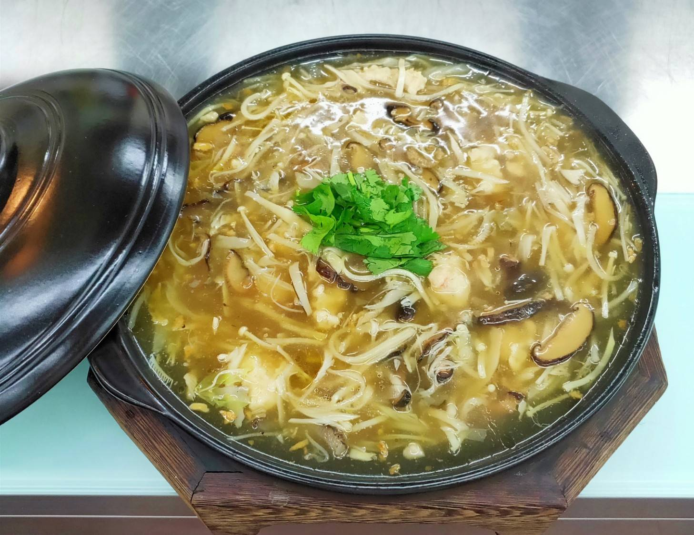

調味：鹽10克，冰糖45g，鰹魚粉1/2匙，味精1/4匙，五陰醋.烏醋37.5g，胡椒粉1/2匙，
太白粉3大匙高湯+清水各700g，蒜頭酥1大匙，2大匙香油，
大白菜切絲，鮑魚菇，金針菇，杏鮑菇，烏蔘，全是絲，香菜切花，肉切條，
鋼盆：魚漿，肉，蝦仁一起拋摔，加入適量，味精，胡椒粉，鹽，加入半顆蛋液，拌勻，
加入一大匙地瓜粉。
大火煮水，菇類全部川燙，滾後撈起，關小火放入魚漿，浮起，大火煮滾，
大火煮高湯，加入蝦米，香菇，扁魚，大白菜，滾後關小火，加入所有味道，倒入筍絲，
煮水筍絲，放入菇類，小火慢熬，加入烏蔘，勾芡，開大火滾後加入肉跟蝦仁再次勾芡，
加入五陰醋.烏醋37.5g，蒜頭酥1大匙，香油，小火，成盤，放上香菜。

砂鍋明蝦粉絲堡
蔥油全雞
桂花炒三絲
心得